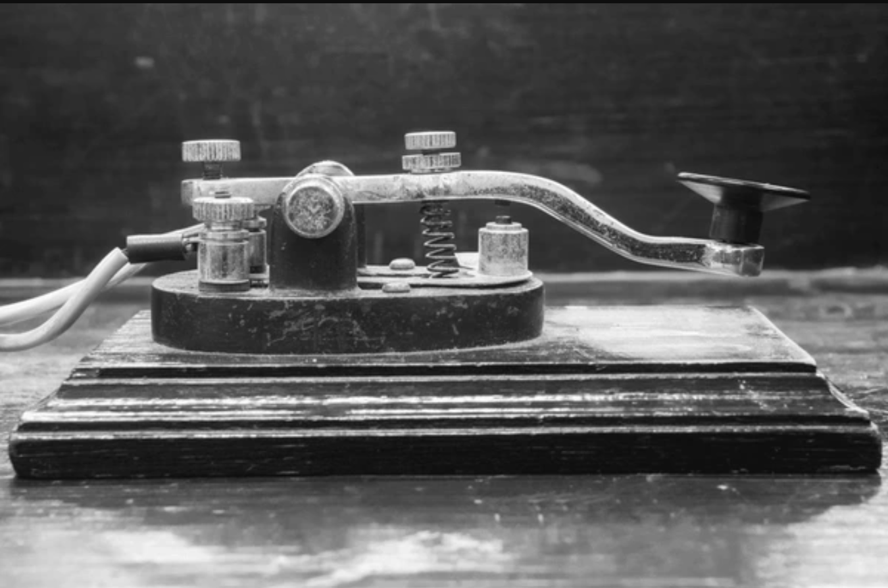
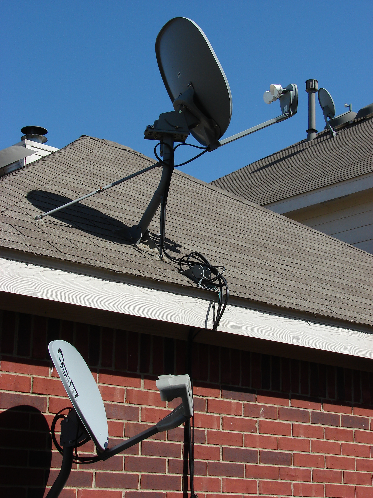
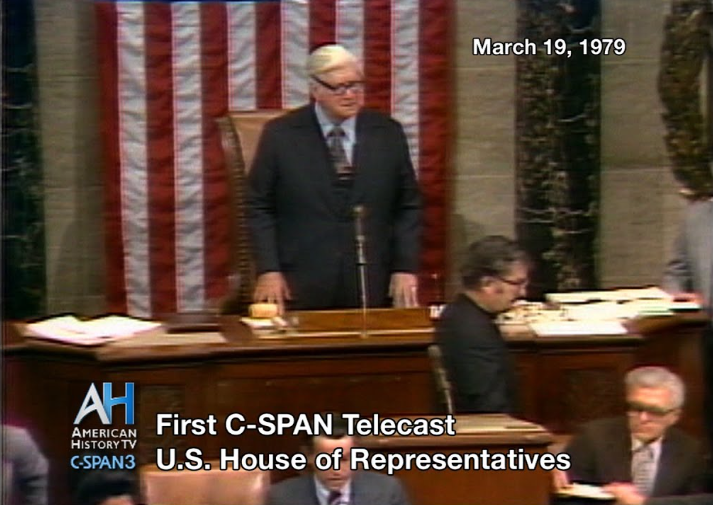
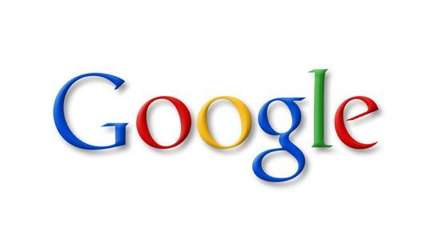
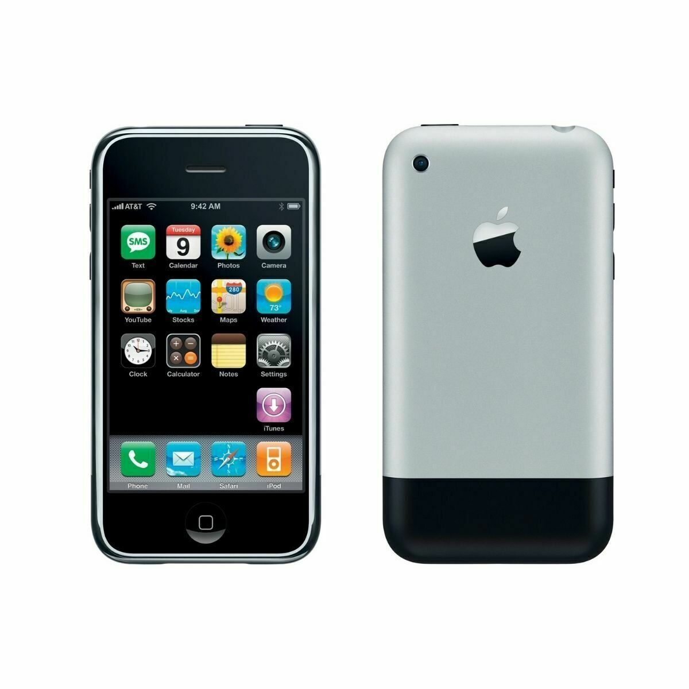
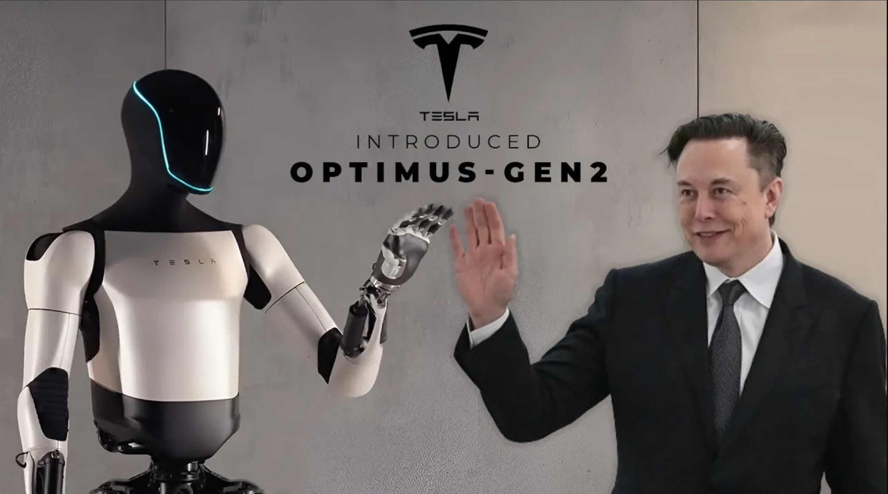

From Print to Algorithms: The Evolution of Communication Technology and Media
Timeline
1792

Print Media
The Postal Service Act is passed, granting substantial subsidies for newspapers, which effectively made the United States government an early investor in the news business. These subsidies allowed for the wide distribution of newspapers across the nation, shaping early American media consumption habits and contributing to a relatively informed public.
Editors enjoyed the benefits of receiving an unlimited number of newspapers free of charge. This system effectively subsidized elections due to the vast reach of these newspapers. The impact of this widespread distribution was profound, as noted by Alexis De Tocqueville in the 1830s. He observed that even in frontier regions like Michigan, ordinary citizens were as informed as their counterparts in New York, thanks to the accessibility of newspapers due to the postal service.
Editors enjoyed the benefits of receiving an unlimited number of newspapers free of charge. This system effectively subsidized elections due to the vast reach of these newspapers. The impact of this widespread distribution was profound, as noted by Alexis De Tocqueville in the 1830s. He observed that even in frontier regions like Michigan, ordinary citizens were as informed as their counterparts in New York, thanks to the accessibility of newspapers due to the postal service.
1844

The Telegraph
Samuel Morse sent the first telegraph message, marking a significant shift in the speed of news transmission. established newspapers initially perceived the telegraph as a threat. This fear was exacerbated by figures like Samuel Colt, a business agent for Morse, who envisioned using the telegraph to bypass major newspapers like those in New York City and deliver news directly from sources like British steamers to locations further inland, like New Orleans.
To combat this potential disruption, newspapers in New York City banded together and formed the New York Associated Press, which evolved into the Associated Press we know today. The AP strategically lobbied for legal changes that granted newspapers preferential access to information transmitted via telegraph lines. This control over the flow of information solidified the AP's position as a gatekeeper, giving them substantial influence over what news reached the public. The AP's power extended to dictating which newspapers could access their news feed, a practice that the Supreme Court deemed unconstitutional only in 1945. This control over access contributed to the dense concentration of newspapers in New York City, as early access to the AP feed gave publications a considerable advantage over their rivals.
To combat this potential disruption, newspapers in New York City banded together and formed the New York Associated Press, which evolved into the Associated Press we know today. The AP strategically lobbied for legal changes that granted newspapers preferential access to information transmitted via telegraph lines. This control over the flow of information solidified the AP's position as a gatekeeper, giving them substantial influence over what news reached the public. The AP's power extended to dictating which newspapers could access their news feed, a practice that the Supreme Court deemed unconstitutional only in 1945. This control over access contributed to the dense concentration of newspapers in New York City, as early access to the AP feed gave publications a considerable advantage over their rivals.
1880s

Mass Produced Newspapers
The rise of mass-circulation newspapers, fueled by advertising and a growing urban population, leads to the emergence of two competing models: the "omnibus" model (like the New York World) catering to diverse audiences with a wide range of content, and the highbrow model (like the New York Times) focusing on in-depth reporting and a more selective audience. As cities expanded and newspapers grew beyond four pages to accommodate more content and advertising, publications faced a choice: cater to diverse audiences with a wide array of content or double down on in-depth reporting for a more discerning readership.
The "omnibus" model, exemplified by the New York World, sought to appeal to a broad audience by incorporating a variety of features. These newspapers were characterized by their inclusion of cartoons, "the funnies," and content aimed at reaching immigrant populations. In contrast, the "highbrow" model, represented by the New York Times, opted to focus on delivering high-quality information across an expanded range of serious topics. This model maintained a commitment to in-depth reporting for a more selective audience. These two competing approaches would continue to shape the landscape of the metropolitan press well into the 20th century.
The "omnibus" model, exemplified by the New York World, sought to appeal to a broad audience by incorporating a variety of features. These newspapers were characterized by their inclusion of cartoons, "the funnies," and content aimed at reaching immigrant populations. In contrast, the "highbrow" model, represented by the New York Times, opted to focus on delivering high-quality information across an expanded range of serious topics. This model maintained a commitment to in-depth reporting for a more selective audience. These two competing approaches would continue to shape the landscape of the metropolitan press well into the 20th century.
1920s

Journalism
During the 1920s, journalism in the United States saw the emergence and institutionalization of "professional objectivity" as a norm. This shift occurred as journalists grappled with uncertainties about truth and sought to establish procedures for ensuring objectivity in their reporting. Notably, this concept of objectivity primarily reflected a white perspective and differed from the approaches taken by the Black press, which embraced advocacy journalism to fight for recognition and attention to their stories.
The ideal of objectivity, with its emphasis on fact-checking and presenting multiple viewpoints, was championed by publications like the New York Times as a way to distinguish their reporting as reliable and trustworthy. However, this pursuit of objectivity was often filtered through a white, male perspective, as evidenced by the reliance of northeastern newspapers on stringers in the South who were often members of the Democratic party. As a result, the national news often failed to reflect the realities of Black communities and the challenges they faced. In contrast, the Black press explicitly rejected the notion of objectivity in favor of advocacy journalism. Black journalists understood that their stories were often ignored or misrepresented by mainstream publications and that they needed to actively advocate for their communities to gain recognition and attention.
The ideal of objectivity, with its emphasis on fact-checking and presenting multiple viewpoints, was championed by publications like the New York Times as a way to distinguish their reporting as reliable and trustworthy. However, this pursuit of objectivity was often filtered through a white, male perspective, as evidenced by the reliance of northeastern newspapers on stringers in the South who were often members of the Democratic party. As a result, the national news often failed to reflect the realities of Black communities and the challenges they faced. In contrast, the Black press explicitly rejected the notion of objectivity in favor of advocacy journalism. Black journalists understood that their stories were often ignored or misrepresented by mainstream publications and that they needed to actively advocate for their communities to gain recognition and attention.
1948

Cable Television
Cable television emerges, initially as a way to provide television signals to communities with poor reception. This technology, which would later transform the news landscape, remained relatively niche for several decades. Entrepreneurs in these areas would set up antennas in locations with strong signals, typically on mountaintops or rooftops, and then use coaxial cables and amplifiers to transmit those signals to households in their communities. This innovative approach allowed residents in remote or geographically challenging areas to access television programming that would have otherwise been unavailable to them.
However, FCC regulations during the early years of cable television severely limited its potential for growth and innovation. Cable operators were explicitly prohibited from competing with traditional broadcasters and were only allowed to retransmit existing broadcast signals. This regulatory framework stifled cable's ability to offer unique programming or develop alternative models for television broadcasting. It wasn't until the late 1960s, as dissatisfaction with the limitations of network television grew, that the possibilities of cable television began to be reimagined. The desire for programming that went beyond the narrow, elitist perspective of network news, coupled with the increasing availability of multiple channels thanks to cable technology, led to a push for deregulation. This shift in thinking would eventually pave the way for the transformative impact of cable television on the news landscape.
However, FCC regulations during the early years of cable television severely limited its potential for growth and innovation. Cable operators were explicitly prohibited from competing with traditional broadcasters and were only allowed to retransmit existing broadcast signals. This regulatory framework stifled cable's ability to offer unique programming or develop alternative models for television broadcasting. It wasn't until the late 1960s, as dissatisfaction with the limitations of network television grew, that the possibilities of cable television began to be reimagined. The desire for programming that went beyond the narrow, elitist perspective of network news, coupled with the increasing availability of multiple channels thanks to cable technology, led to a push for deregulation. This shift in thinking would eventually pave the way for the transformative impact of cable television on the news landscape.
1975

Satellite TV
HBO partners with satellite technology to distribute its programming nationwide, paving the way for the growth of cable news channels and specialized programming. This development marks a crucial step in the fragmentation of the media landscape, as viewers gain access to a wider variety of content tailored to specific interests. This innovation enabled cable operators to offer a wider variety of content, including sports, movies, and specialized programming, which attracted viewers seeking alternatives to the limited offerings of network television.
The adoption of satellite technology was driven by practical considerations. Physically transporting tapes of movies and other programming to cable operators across the country, a process known as "bicycling," was cumbersome and limited the range of content that could be offered. Using existing telephone wires to transmit programming was prohibitively expensive. Satellite technology provided a cost-effective and efficient solution, allowing for the real-time distribution of programming to a nationwide audience. The "Thrilla in Manila" boxing match in 1975, broadcast via satellite by HBO, exemplified the potential of this technology to deliver live events to viewers across the country. The high cost of satellite dishes initially posed a barrier to entry for some cable operators, but HBO's willingness to help finance the installation of these dishes facilitated wider adoption.
The adoption of satellite technology was driven by practical considerations. Physically transporting tapes of movies and other programming to cable operators across the country, a process known as "bicycling," was cumbersome and limited the range of content that could be offered. Using existing telephone wires to transmit programming was prohibitively expensive. Satellite technology provided a cost-effective and efficient solution, allowing for the real-time distribution of programming to a nationwide audience. The "Thrilla in Manila" boxing match in 1975, broadcast via satellite by HBO, exemplified the potential of this technology to deliver live events to viewers across the country. The high cost of satellite dishes initially posed a barrier to entry for some cable operators, but HBO's willingness to help finance the installation of these dishes facilitated wider adoption.
1979

C-SPAN
In 1979, C-SPAN launches, providing unfiltered coverage of government proceedings. Funded by the cable industry as a gesture of public service (and to secure a more favorable regulatory environment), C-SPAN offers a unique model for news consumption, focused on transparency and direct access to information.
The creation of C-SPAN serves as a compelling example of how corporations, motivated by both altruism and self-interest, can play a role in shaping the media landscape and supporting civic engagement. By providing a platform for unfiltered coverage of government proceedings, C-SPAN aimed to foster transparency and accountability in government, allowing citizens to directly witness the workings of their democracy. This approach stood in stark contrast to the highly edited and often partisan nature of news coverage prevalent on commercial broadcast and cable channels at the time. However, as with any news model that relies on specific technological and economic structures, C-SPAN's future is not guaranteed. The rise of cord-cutting and the decline of traditional cable subscriptions pose significant challenges to C-SPAN's long-term sustainability, as its funding model is directly tied to the cable industry.
The creation of C-SPAN serves as a compelling example of how corporations, motivated by both altruism and self-interest, can play a role in shaping the media landscape and supporting civic engagement. By providing a platform for unfiltered coverage of government proceedings, C-SPAN aimed to foster transparency and accountability in government, allowing citizens to directly witness the workings of their democracy. This approach stood in stark contrast to the highly edited and often partisan nature of news coverage prevalent on commercial broadcast and cable channels at the time. However, as with any news model that relies on specific technological and economic structures, C-SPAN's future is not guaranteed. The rise of cord-cutting and the decline of traditional cable subscriptions pose significant challenges to C-SPAN's long-term sustainability, as its funding model is directly tied to the cable industry.
1990s

Public Trends in News
The 1990s witnessed a significant decline in newspaper readership, a trend that began in the 1940s. Despite declining readership, newspapers continued to play a crucial role in the news ecosystem, serving as the primary source for serious news stories that were subsequently picked up by television and radio. However, as newspaper readership dwindled, many newspapers became attractive takeover targets for outside owners who often "bled them dry.", meaning that they would prioritize short term profits over journalistic integrity.
There are a couple of factors that have led to the decline in readership of newspapers. The first one of these is the rise of television, particularly cable news with its 24/7 news cycle and specialized programming. Second, the beginnings of the internet start to acccelerate this trend of getting news from another source. This shift in media consumption patterns, combined with changes in advertising revenue models, created a challenging environment for newspapers to maintain their traditional economic model.
There are a couple of factors that have led to the decline in readership of newspapers. The first one of these is the rise of television, particularly cable news with its 24/7 news cycle and specialized programming. Second, the beginnings of the internet start to acccelerate this trend of getting news from another source. This shift in media consumption patterns, combined with changes in advertising revenue models, created a challenging environment for newspapers to maintain their traditional economic model.
2000s

Search Engines
Search engines like Google, emerging alongside early social media platforms such as MySpace (2003) and Facebook (2004), introduced a fundamental shift in how individuals access and consume information online, including news. While previous eras saw information flow shaped by regulatory frameworks, the editorial decisions of newspapers and broadcasters, and the constraints of physical distribution networks, the rise of search engines and social media platforms ushered in the era of algorithmic influence. These algorithms, designed to filter and personalize vast amounts of online content, prioritizing relevance and engagement, often at the expense of exposure to diverse perspectives. As algorithms increasingly determined what news and information users encountered, concerns arose about the potential for creating "echo chambers" and reinforcing existing biases. The early 2000s marked the developing stage of this algorithmic influence on news consumption, a trend that would continue to accelerate in the ensuing decades, raising profound questions about the future of journalism and its role in a democratic society.
2000s
Social Media
Social media platforms like Facebook and Twitter (2007) become dominant forces in news and entertainment, with their algorithms playing a central role in determining what content users see. This era is characterized by the rise of filter bubbles, the spread of misinformation, and growing concerns about the impact of algorithms on public discourse.
To put things into perspective, in the early 2000s, less than a million people used Myspace, and Facebook hadn't even launched. By 2018, Facebook had over 2.26 billion users, with other sites also growing to include hundreds of millions of users. Experts have noted both the good and bad sides of this shift. While social media offers new chances for different voices and communities to be heard, the sources also point out problems like more fake news and increased polarization of opinions. They say that while we should be careful about the bad parts of technology like comparing ourselves to others too much or getting stressed from it, we should also try to use technology to make our lives better and build real connections.
To put things into perspective, in the early 2000s, less than a million people used Myspace, and Facebook hadn't even launched. By 2018, Facebook had over 2.26 billion users, with other sites also growing to include hundreds of millions of users. Experts have noted both the good and bad sides of this shift. While social media offers new chances for different voices and communities to be heard, the sources also point out problems like more fake news and increased polarization of opinions. They say that while we should be careful about the bad parts of technology like comparing ourselves to others too much or getting stressed from it, we should also try to use technology to make our lives better and build real connections.
2010s

Smart Devices
Mobile devices, including smartphones and tablets, become the primary means of accessing news for many people. This shift further personalizes news consumption, as algorithms tailor content to individual user data and behavior. Having a device that is always connected to the internet and social media revolutionized the industry and the way we consume media.
There are positives and negatives to this though, a positive is the impact of mobile devices on communication, enabling instant connections with friends and family across the globe, regardless of location. This increased connectivity has fostered global connections, encouraged cultural exchange and understanding, and provided opportunities for meaningful interaction and support. This also provides a platform for marginalized communities to voice their concerns and aspirations. This increased level of connectivity has also led to mental health concerns, especially among adolescents. Studies have linked social media use to body image issues, anxiety, depression, and loneliness, especially among young girls. The constant comparison with others and the pressure to present an idealized self online can negatively affect self-esteem and well-being. Smart device and social media use has also led to the spread of misinformation and fake news. The speed and reach of social media platforms allow false information to spread rapidly, potentially contributing to mistrust in credible institutions and exacerbating social conflict.
There are positives and negatives to this though, a positive is the impact of mobile devices on communication, enabling instant connections with friends and family across the globe, regardless of location. This increased connectivity has fostered global connections, encouraged cultural exchange and understanding, and provided opportunities for meaningful interaction and support. This also provides a platform for marginalized communities to voice their concerns and aspirations. This increased level of connectivity has also led to mental health concerns, especially among adolescents. Studies have linked social media use to body image issues, anxiety, depression, and loneliness, especially among young girls. The constant comparison with others and the pressure to present an idealized self online can negatively affect self-esteem and well-being. Smart device and social media use has also led to the spread of misinformation and fake news. The speed and reach of social media platforms allow false information to spread rapidly, potentially contributing to mistrust in credible institutions and exacerbating social conflict.
2020s

Artificial Intelligence
Artificial intelligence plays an increasingly prominent role in content curation, news production, and education. This has been raising concerns about bias, accuracy, and the future of journalism. Efforts to mitigate these concerns include the development of AI-powered fact-checking tools and a renewed focus on media literacy.
AI is quickly changing many parts of society, especially with how AI could be used in education. For example, a report from Stanford says that in 2023, one of the biggest things to happen in education was the arrival of AI tools that can create text, like ChatGPT. While teachers are worried about students using these tools to cheat, they also see how AI can be used for good, like making reading assignments or helping students write better. That same source adds that AI can help teachers with things like grading and planning lessons, which would free up their time to focus on things that only humans can do well. However, it also points out a concern that AI might just make us better at teaching in ways that aren't very good, like just repeating the same old bad teaching methods but faster. This idea of AI just making things more efficient, but not necessarily better, is similar to what was discussed earlier about how newspapers were "bled dry" when their focus shifted to quick profits instead of good journalism.
As for AI in the news, World Economic Forum points out how AI tools are already being used to moderate content on social media. It gives examples like TruePic, which focuses on verifying photos, and Two Hat, which is working on AI-powered content moderation for social media. This connects to the worries discussed earlier about the spread of misinformation and the need for accurate and trustworthy news. However, there's also a concern that AI could be used to create news content that isn't accurate. The Stanford Report stresses the importance of teaching students to be critical of AI and how it's used. This idea of critical thinking is also important when consuming news, as discussed earlier in the context of media literacy.
AI is quickly changing many parts of society, especially with how AI could be used in education. For example, a report from Stanford says that in 2023, one of the biggest things to happen in education was the arrival of AI tools that can create text, like ChatGPT. While teachers are worried about students using these tools to cheat, they also see how AI can be used for good, like making reading assignments or helping students write better. That same source adds that AI can help teachers with things like grading and planning lessons, which would free up their time to focus on things that only humans can do well. However, it also points out a concern that AI might just make us better at teaching in ways that aren't very good, like just repeating the same old bad teaching methods but faster. This idea of AI just making things more efficient, but not necessarily better, is similar to what was discussed earlier about how newspapers were "bled dry" when their focus shifted to quick profits instead of good journalism.
As for AI in the news, World Economic Forum points out how AI tools are already being used to moderate content on social media. It gives examples like TruePic, which focuses on verifying photos, and Two Hat, which is working on AI-powered content moderation for social media. This connects to the worries discussed earlier about the spread of misinformation and the need for accurate and trustworthy news. However, there's also a concern that AI could be used to create news content that isn't accurate. The Stanford Report stresses the importance of teaching students to be critical of AI and how it's used. This idea of critical thinking is also important when consuming news, as discussed earlier in the context of media literacy.
Future

Future Speculation
The exponential changes in technology that have happened over the past couple of decades have proven to make a monumental impact on our daily lives. The future of technology is unpredictable, but it is certain that it will continue to shape the way we consume news and learn. The possibilities are endless, and the future is full of exciting developments that will continue to transform the media landscape.
There are many potential directions that technology could take, for example, AI, combined with augmented reality (AR) and virtual reality (VR), could revolutionize the classroom. Imagine students interacting with historical figures, exploring distant environments, or conducting virtual science experiments. These immersive experiences could spark curiosity and make learning more engaging and memorable. Another possibility is that AI could create a truly personalized learning experience for every student. Imagine AI tutors adapting to each student's learning style and pace, identifying areas where they struggle, and providing targeted support. This could help all students reach their full potential and make education more engaging and effective.
In the news industry, AI-powered fact-checking tools can help identify and flag false or misleading information in real-time. This could help slow the spread of misinformation on social media and improve the overall quality of information available online. There is also the possibility that AI could curate news feeds tailored to individual interests and preferences while also ensuring exposure to diverse perspectives and viewpoints. This could help break down filter bubbles and encourage a more informed and nuanced understanding of complex issues.
There are many potential directions that technology could take, for example, AI, combined with augmented reality (AR) and virtual reality (VR), could revolutionize the classroom. Imagine students interacting with historical figures, exploring distant environments, or conducting virtual science experiments. These immersive experiences could spark curiosity and make learning more engaging and memorable. Another possibility is that AI could create a truly personalized learning experience for every student. Imagine AI tutors adapting to each student's learning style and pace, identifying areas where they struggle, and providing targeted support. This could help all students reach their full potential and make education more engaging and effective.
In the news industry, AI-powered fact-checking tools can help identify and flag false or misleading information in real-time. This could help slow the spread of misinformation on social media and improve the overall quality of information available online. There is also the possibility that AI could curate news feeds tailored to individual interests and preferences while also ensuring exposure to diverse perspectives and viewpoints. This could help break down filter bubbles and encourage a more informed and nuanced understanding of complex issues.